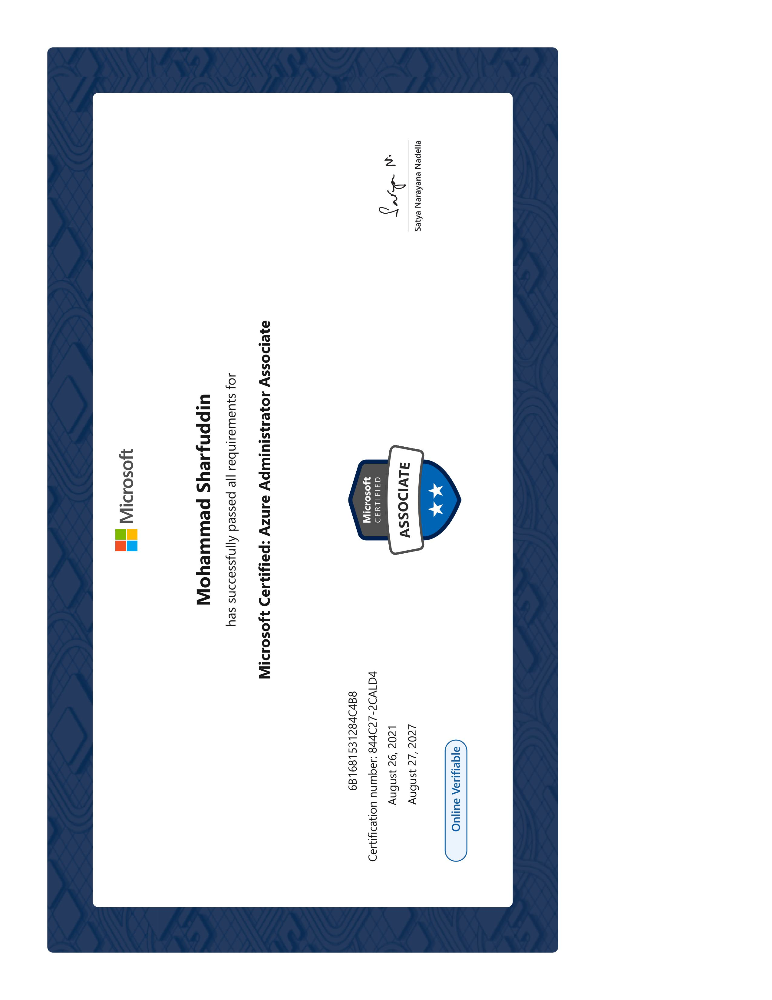

Senior Technology Strategist with 19+ years in IT Infrastructure & Operations and 4.7+ years in AWS Cloud & DevOps. Expertise in CI/CD pipelines, Infrastructure as Code, containerization, and cloud-native architectures.
{
"name": "Md Sharfuddin",
"role": "Senior DevOps Engineer",
"experience": "19+ years IT, 4.7+ years Cloud",
"cloud": "AWS",
"certs": ["AWS SAA", "Azure AZ-104", "IIT Roorkee"],
"passion": "Automate All The Things",
"status": "Available for hire"
}
Senior Technology Strategist with over 19+ years of experience in IT Infrastructure and Operations, including 4.7+ years in AWS Cloud & DevOps. Specializing in technology planning, roadmap development, and providing direction on technology/technical architecture selection and evaluation.
Expertise in DevOps practices and processes intended to speed up and automate aspects of developing, testing, and releasing software, allowing for continuous delivery. Completed Advanced Certification in Cloud Computing and DevOps from IIT Roorkee with Intellipaat.
Delivery Anchor with career success in delivering solutions that remedy core business issues and position the organization to reach the next level of profitability through technology introduction.
Deployed a Java-based application to Kubernetes clusters with Jenkins, Maven, Docker, SonarQube, ArgoCD. Built automated CI/CD pipeline with Minikube on EC2 for testing and development.
Developed one-click deployment processes using Terraform for EC2, S3, VPC, networking, state management and AWS provider plugin. Automated infrastructure provisioning with Ansible playbooks.
Implemented CI/CD pipeline with Jenkins, automated testing and continuous integration. Utilized ELK stack and CloudWatch for troubleshooting, health checks, rollbacks with alert systems for 20% downtime reduction.
Microsoft Certified Professional

View Certificate